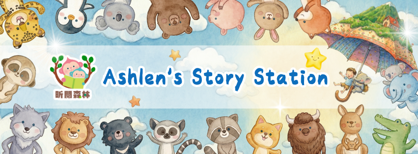

從故事開始
以英文繪本、圖像、聲音與情境，引導孩子自然進入語言，而不是一開始就用考卷和文法壓迫孩子。
從故事、聲音與閱讀開始，陪孩子走進真實世界。
在昕閱森林，我們不只教英文，更帶孩子用英文理解文化、表達自己、看見世界。
昕閱森林 Ashlen’s Story Station 是一座沒有圍牆的英文教室。孩子在這裡從故事開始，透過聽覺、閱讀、表達與真實互動，一步步把英文變成能夠使用、能夠感受、也能夠與世界連結的能力。

以英文繪本、圖像、聲音與情境，引導孩子自然進入語言，而不是一開始就用考卷和文法壓迫孩子。
孩子學語言先從大量聽見開始，熟悉聲音、節奏與語感，再逐步連結字母與閱讀。
透過自然拼讀建立音與字母的連結，陪孩子從共讀慢慢走向自主閱讀。
從課堂故事到海外校園、文化交流與世界議題，讓孩子真的用英文觀察、提問與表達。
Ashlen 曾經也是在英文學習裡感到挫折的孩子。在國立編譯館的年代，英文對她而言曾經只是考卷上的字塊。她曾經靠著死記硬背勉強過關，卻在考試範圍擴大後發現，真正的語言能力不是刷題能累積出來的。
直到 16 歲那年，她走進美國的教室，遇見一位懂她的老師，才第一次感受到：原來語言是活的。
回到台灣後，她不再只鑽研語法公式，而是從英文繪本、圖像、韻律與故事中重新找回學習英文的快樂。這份快樂成為她後來赴墨爾本進修、學習翻譯與教育的起點，也慢慢長成了今天的昕閱森林。
真正適合孩子的英文學習，不是先背規則，而是先聽見、感受、理解，再慢慢說出來、讀出來。
孩子先透過故事、韻律與大量聽覺輸入，熟悉英文的聲音。
透過繪本、圖像與情境，讓孩子理解語言背後的意思，而不是只背單字。
自然拼讀幫助孩子把聲音與字母連接起來，建立閱讀的基礎能力。
透過口說、任務、分享與真實情境，讓孩子開始用英文說出自己的想法。
昕閱森林的教學，不只是教孩子記住英文，而是幫孩子建立一條能走得長遠的路：從聽力先行，到自然拼讀；從橋樑閱讀，到真實表達。孩子不只是學會英文，更學會用英文看見更大的世界。
透過英文繪本、圖像與故事情境，讓孩子自然理解語言，建立對英文的親近感。
閱讀起步從聲音出發，連結字母與拼讀規則，讓孩子不再只靠死背單字。
自然拼讀在安全、鼓勵與有主題的環境裡練習表達，讓孩子敢說，也說得有內容。
口說練習結合圖像、創作與英文，讓孩子用感官和想像力進入語言。
多感官學習陪孩子從親子共讀、師生共讀，逐步走向自主閱讀。
中階閱讀昕閱森林的海外學習旅程，不是一般觀光團，也不是制式遊學團。孩子會在行前學習、旅中任務、真實互動與文化觀察中，把英文變成可以使用的能力。
一團約 5-10 人，保留更多互動、提問與照顧空間，讓孩子不是被動跟團，而是真的參與。
孩子在學校、餐廳、圖書館、文化場域與生活情境中練習使用英文。
不只看風景，更引導孩子觀察文化差異，回來後整理成口說、文字、攝影或影片作品。
我們帶孩子出國，不只是為了看見遠方，而是讓孩子發現：原來自己學過的英文，可以拿來問問題、交朋友、讀懂標示、理解文化，也可以勇敢說出自己的想法。
韓國旅程不只是城市參訪，而是帶孩子走進文化與真實議題。在旅程中，孩子將透過觀察、提問與任務，理解一個地方的歷史、生活與人。若行程安排包含與脫北者相關的交流或生命故事學習，這將成為孩子理解世界議題的重要窗口。
紐西蘭旅程將孩子帶進真實校園與生活場景。從入學式、制服、早茶、課堂、圖書館，到草地生活、體育課、文化課與自然生態，孩子不只是參觀，而是透過英文進入一段真實的生活經驗。
入學式、制服、教室、早茶、圖書館、體育課，讓孩子感受海外學校的一天。
校長家、牧場、咖啡廳、商店、餐廳與鎮上探索，讓孩子看見英文如何出現在日常生活裡。
毛利文化、玉石、奇異鳥、紅樹林、羊農場、湖邊公園，讓孩子透過英文理解土地與文化。
觀察、拍照、訪問、記錄，成為小小文化記者。
旅行不是只有抵達景點，而是學會觀察、提問、記錄與表達。
在昕閱森林的世界學習旅程裡，孩子不是被動跟著走，而是帶著任務出發。他們會學習用鏡頭觀察世界、用英文提出問題、用文字整理發現，最後把旅途中的經驗變成自己的故事。
今天你看到什麼和台灣不一樣？
練習向當地人、老師或同學提出簡單問題。
學會從畫面中整理開頭、過程與發現。
把照片、影片、口說或文字整理成自己的學習成果。
旅程中也可以安排基礎手機攝影引導，讓孩子學會用 0.5x、1x、2x 焦段，拍出人物、環境、細節與故事感畫面。
語言的終點不是考試，而是理解。
Ashlen 曾參與 SSSP 小型學校支持計畫，跨海協助敘利亞孩子從最基礎的聲音開始學英文。隨著學習需求增加，她也投入當地老師的培訓，讓英文學習不只幫助孩子，也支持老師重新建立生活與教學的力量。
對昕閱森林的孩子來說，這樣的連結是一扇看見世界的窗。當台灣的孩子與遠方同齡人線上對話，他們會發現：世界上有不同的童年、不同的生活條件，也有同樣想被理解、想分享生活的孩子。英文在這一刻，不再只是課本上的句子，而是一座讓人靠近彼此的橋。
從課堂、比賽、海外旅程到文化交流，每一段影像都可以成為孩子成長的證明，也成為家長理解教育理念的入口。
從初賽、複賽到決賽，看見孩子如何把英文變成自己的聲音。
孩子走進海外校園，在真實生活裡使用英文。
用鏡頭、英文提問與故事整理，記錄旅途中看見的世界。
透過英文與遠方同齡孩子對話，看見世界的多樣性。
從聲音、圖像與故事開始，建立孩子的英文語感。
不只是旅行，而是能被整理、表達與回顧的學習旅程。
英文學習不只為了分數，而是為了理解、表達與使用。
重視聽覺、故事、圖像、共讀與真實情境。
孩子在教室裡學到的內容，會延伸到生活與海外旅程。
海外學習旅程人數精緻，保留更多互動與照顧。
讓孩子透過英文認識不同文化與生命故事。
透過照片、影片、口說、文字與作品，讓學習不只停留在當下。
每個孩子的英文起點不同，適合的學習節奏也不同。如果你想了解故事課、自然拼讀、口說課，或未來海外世界學習旅程，歡迎透過昕閱森林的社群與我們聯繫。
A：昕閱森林不只重視單字與文法，更重視故事、聽覺、閱讀、口說與真實使用情境。孩子不是只為了考試學英文，而是學會用英文理解世界與表達自己。
A：可以先從故事、聽力與自然拼讀開始建立基礎。實際適合的課程與旅程，需要依孩子年齡、程度與個性評估。
A：可依孩子的聽覺發展、字母認識與學習狀態安排。網站先不寫死年齡，保留彈性，後續由客戶確認。
A：它比一般遊學團更重視深度學習與文化理解。孩子會透過行前學習、旅中任務、校園體驗與真實互動，把英文帶進生活裡。
A：目前定位為小團制，約 5-10 人，實際人數依每次旅程規劃為準。
A：部分海外學習旅程可能會規劃親子同行，實際方式依當次行程公告為準。
A：可以規劃照片、影片、口說分享、文字紀錄或小小文化記者作品，讓孩子把旅途經驗整理成可回顧的學習成果。
A：請透過 Facebook、Instagram 或未來提供的表單 / LINE 進行諮詢。